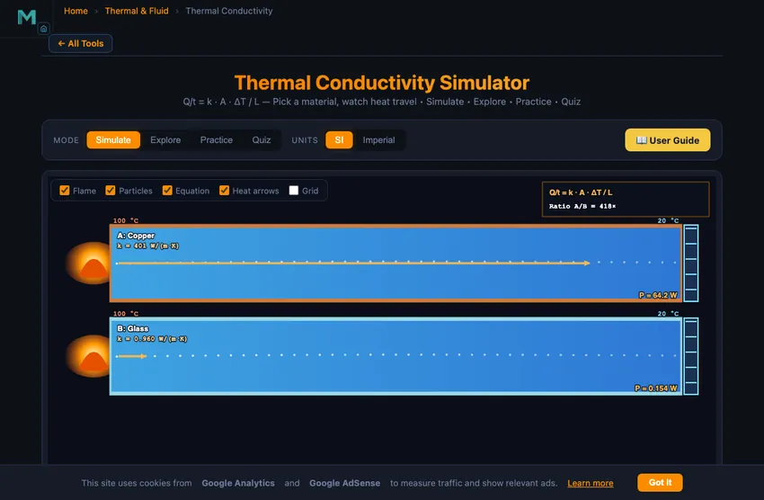

Thermal Conductivity Calculator
Q/t = k · A · ΔT / L — Pick a material, watch heat travel • Simulate • Explore • Practice • Quiz
Display Controls
Σ Live equations — values substituted from current state
⚖ Material comparison — heat rate at current ΔT, A, L
💡 What-if coach — insights from current values
1 Overview
The Thermal Conductivity Simulator lets you watch heat travel through a rod of any chosen material and compare two materials side by side. The hot end (red flame) feeds heat into the rod, and the cold end (blue) draws it out. The colour gradient along each rod shows the steady-state temperature, and an animated thermal wavefront shows how fast heat actually diffuses into the material from a sudden hot pulse.
Ten common materials are pre-loaded — from copper (k = 401 W/(m·K)) and aluminium (237) at the conductive end, down through brass, iron and stainless steel, to insulators glass, brick, concrete, plastic and pine wood (k = 0.13). Built for high-school and technical-college physics on Fourier’s law, with Practice and Quiz modes for self-testing.
2 Configuring the System
The simulator opens in Simulate mode comparing Copper (k = 401) with Glass (k = 0.96), a 20 cm rod, 4 cm² cross-section, hot end at 100 °C and cold end at 20 °C. The right-hand readout cards show the steady-state heat rate P = k·A·ΔT/L for each rod — copper carries about 12.8 W, glass only 31 mW, a 400× difference for the same geometry.
Click 🔥 Start Heating to play the time-based animation. The thermal wavefront sweeps along each rod with speed proportional to thermal diffusivity α = k / (ρ·c). Copper’s wavefront races ahead while glass crawls. Adjust ΔT, length, area, or pick different materials and watch the rates and the time-to-midpoint update live.
3 Running the Cycle
The canvas shows two horizontal rods stacked one above the other. A flame at the left end of each rod represents the hot reservoir; a blue fin at the right end represents the cold reservoir. Vibrating particles inside each rod animate faster on the hot side (high kinetic energy) and slower on the cold side. A red-to-blue colour gradient overlays the rod showing the steady-state temperature profile.
Six readout cards report each rod’s k, heat rate P, thermal diffusivity α, and time to mid-rod — the characteristic time for heat to diffuse to the centre when the hot end is suddenly raised. The + Custom button lets you add your own material with a user-defined k value (and optional density and specific heat for diffusivity).
4 The Underlying Theory
Switch to Explore for concept cards across four categories. Basics covers what conductivity is, how heat moves at the molecular level, and why metals conduct so much better than non-metals. Formulas derives Fourier’s law, explains thermal diffusivity, R-value (insulation rating), and the thermal-resistance analogue.
Applications covers heat sinks, cookware, building insulation, refrigeration, and CPU thermal paste. Common Errors highlights traps like confusing k with heat capacity, mixing units, or assuming steady state when the rod is still warming up.
5 Try a Problem
Practice generates randomised problems — find heat rate through a 30 cm copper bar, find the unknown thermal conductivity from experimental data, calculate the temperature difference needed for a target heat flow, or rank materials by heat-travel speed. Enter your answer (5% tolerance) and click Check. Show Solution walks through every step.
Quiz mode presents five mixed conceptual + numerical questions per session. Topics include identifying conductors vs insulators, applying Q/t = k·A·ΔT/L, predicting how doubling thickness or area changes the heat flow, and explaining why metal feels colder than wood at the same temperature.
6 SI vs Imperial
Toggle the SI / Imperial pill to convert every readout. SI uses W/(m·K), W, m, °C, and m². Imperial uses BTU/(hr·ft·°F), BTU/hr, in, °F, and in². Internal calculations stay in SI throughout so accuracy is preserved.
Useful conversions: 1 W/(m·K) ≈ 0.5778 BTU/(hr·ft·°F); 1 W ≈ 3.412 BTU/hr; Δ°F = 1.8 × Δ°C.
7 Power Tools
Action bar: 🔥 Start Heating plays a time-based animation showing how quickly the thermal wavefront propagates through each material; Stop pauses; Reset clears traces; Undo / Redo step through your last edits (Ctrl+Z / Ctrl+Shift+Z).
Canvas toggles hide/show Flame, Particles, Equation, Heat arrows, and Grid. Show Calculations opens a step-by-step modal with every substitution and result. CSV / PNG export the data and a labelled snapshot. Right-click the canvas for the same actions.
8 Tips & Best Practices
- Heat rate doubles when ΔT doubles, doubles when area A doubles, and halves when length L doubles — verify by sliding any one parameter.
- Thermal conductivity k is independent of geometry — it is a pure material property. Doubling the rod size does not change k.
- Conductivity (k) controls the steady-state heat rate; thermal diffusivity (α = k / ρc) controls how fast a temperature change propagates. They are different concepts.
- Air at rest (k = 0.026) is the cheapest insulator — that is why double-glazed windows trap a still-air gap, and why fluffy materials like fibreglass insulate well.
- Pair this simulator with the Specific Heat Capacity and Heat Transfer Modes tools to cover all three modes of heat transfer.
Understanding Thermal Conductivity and Fourier’s Law

Thermal conductivity (k) measures how readily heat flows through a material under a temperature gradient. It is the central material property in conduction problems and is given by Fourier’s law: Q/t = k·A·ΔT/L. The bigger k is, the more heat flows for the same ΔT, area, and thickness.
Conductivity of Common Materials
| Material | k (W/(m·K)) | k (BTU/(hr·ft·°F)) | Class |
|---|---|---|---|
| Copper | 401 | 232 | Excellent conductor |
| Aluminium | 237 | 137 | Excellent conductor |
| Brass | 109 | 63 | Good conductor |
| Iron / mild steel | 80 | 46 | Conductor |
| Stainless Steel | 16 | 9.2 | Poor metal conductor |
| Concrete | 1.4 | 0.81 | Poor conductor |
| Glass | 0.96 | 0.55 | Insulator |
| Brick | 0.72 | 0.42 | Insulator |
| Plastic (PVC) | 0.19 | 0.11 | Good insulator |
| Pine wood | 0.13 | 0.075 | Good insulator |
| Air (still) | 0.026 | 0.015 | Excellent insulator |
Fourier’s Law: Q/t = k·A·ΔT/L
The rate of heat conducted through a flat slab is directly proportional to the conductivity k, the cross-sectional area A, and the temperature difference ΔT, and inversely proportional to the thickness L. A 20 cm copper rod with 4 cm² cross-section and an 80 °C drop carries Q/t = 401×0.0004×80/0.20 ≈ 64 W of heat. The same geometry in glass carries only 0.15 W — copper conducts about 400× more.
Thermal Diffusivity: How Fast Heat Travels
Conductivity tells you the steady-state heat rate, but it does not directly tell you how quickly a temperature change propagates through the material. That speed is governed by the thermal diffusivity α = k / (ρ · c), where ρ is density and c is specific heat. Copper’s α ≈ 1.16×10−4 m²/s lets a thermal wavefront diffuse through 10 cm of copper in about 10 seconds, whereas glass (α ≈ 4.6×10−7) needs over 4 hours for the same distance. The characteristic diffusion time is L²/α.
Why Metals Conduct So Well
In metals, the free electron gas dominates heat transport — mobile electrons collide with the lattice and quickly carry kinetic energy from hot regions to cold ones. In insulators, heat travels only via lattice vibrations (phonons), which scatter much more readily and travel shorter distances. This is why copper, silver, and gold — all great electrical conductors — are also great thermal conductors (the Wiedemann-Franz law links the two).
Engineering Applications
Selecting the right thermal conductivity is critical in engineering. Heat sinks in electronics use aluminium or copper to dump CPU heat into the air; cookware uses aluminium or copper bottoms for even heating with a stainless steel layer for hardness. Insulation in walls, refrigerators, and Thermos flasks use materials with low k and trapped air pockets. Heat exchangers in HVAC and power plants are typically stainless steel for corrosion resistance even though k is modest. Thermal paste on a CPU has k ≈ 5 W/(m·K), filling air gaps that would otherwise drop k to 0.026.
Building Insulation — A Composite-Wall Worked Example
A house wall has three layers (inside to outside): 12.5 mm plasterboard (k = 0.25), 100 mm fibreglass batt (k = 0.04), 100 mm brick (k = 0.7). Interior temperature 20 °C, exterior −5 °C. What is the heat loss per square metre?
For series layers, thermal resistances add: Rtotal = Σ(L/k).
| Layer | L (m) | k (W/m·K) | R = L/k |
|---|---|---|---|
| Plasterboard | 0.0125 | 0.25 | 0.050 |
| Fibreglass batt | 0.100 | 0.04 | 2.500 |
| Brick | 0.100 | 0.7 | 0.143 |
| Indoor air film (Rsi) | — | — | 0.130 |
| Outdoor air film (Rso) | — | — | 0.040 |
| TOTAL | — | — | R = 2.86 m²·K/W |
Heat flux: q = ΔT/R = 25/2.86 = 8.7 W/m². For a 100 m² house wall on a cold day, that’s 870 W of heat loss through one wall alone. Note that the fibreglass batt accounts for 87% of the total R-value despite being only 39% of the wall thickness. The brick and plasterboard contribute almost nothing thermally; they’re structural and aesthetic.
Why You Want Air Trapped in Your Insulation
Still air has thermal conductivity 0.026 W/m·K, lower than any solid insulator. The catch: free-air pockets convect and circulate, transferring heat by bulk motion that the simple Fourier-law calculation misses. The trick of practical insulators is trapping air in tiny pockets too small for convection to start.
- Fibreglass batt. Tangled fibres immobilise air pockets ~1 mm across. Effective k = 0.04, only ~50% above pure air.
- Polyurethane foam. Closed-cell foam with 0.2 mm pockets filled with low-k gas (refrigerant or pentane). k = 0.022, actually below still air because the trapped gas has lower k than air.
- Aerogel. Microscale silica matrix with nm-scale pores. k = 0.013, currently the best mass-produced insulator. Expensive but used in oil/gas pipeline coatings and aerospace.
- Vacuum insulated panel (VIP). Evacuated panel with getter to maintain vacuum. k as low as 0.004. Used in high-end refrigerator doors and arctic shipping containers.
Why Copper Cookware Heats Evenly
Copper’s high thermal conductivity (400 W/m·K) means the bottom of a copper pan equilibrates temperature in seconds. Hot spots from gas flames or induction elements spread out before they can scorch food directly above. Aluminium (240 W/m·K) does the same with less mass. Cast iron (52 W/m·K) conducts much more slowly and gives uneven heating until well preheated — which is why cast iron pans benefit from a 5-minute warm-up before cooking.
The premium chef’s pan is copper-clad: copper for thermal performance, stainless steel surface for cleanability and non-reactivity. Same principle as electronics heat sinks — pick the metal for thermal performance, plate for surface properties.
References
- Incropera — Fundamentals of Heat and Mass Transfer, 7th ed., Chapter 2 (Conduction).
- ASHRAE Handbook — Fundamentals, Chapter on Building Envelope Heat Transfer.
- ISO 8302:1991 — Thermal insulation — Determination of steady-state thermal resistance.
Explore Related Simulators
If you found this thermal conductivity simulator helpful, explore our Specific Heat Capacity, Heat Transfer Modes, Heat Exchanger Simulator, Thermal Expansion, and Phase Change & Latent Heat, and Thermocouple Simulator for more thermal physics practice.
k range: 0.01 – 3000 W/(m·K). Density and specific heat optional — if blank, diffusivity-based features are disabled for this material.